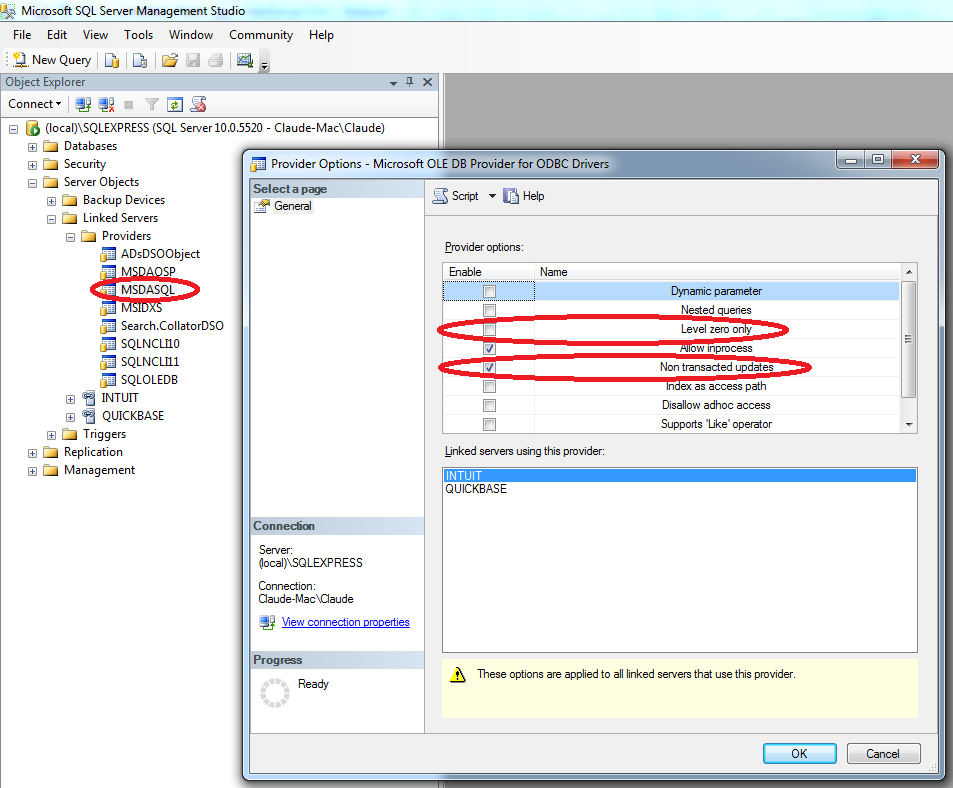

Application Note for QuNect ODBC for QuickBase
Writing a Simple Select Statement for Quickbase in SQL Server
If you don't already have a linked server called QUICKBASE, create one using the instructions in the Creating a Linked Server for Quickbase in SQL Server Using the UI application note. You can get a list of all Quickbase tables you have access to by following the instructions in the Listing All Quickbase Tables in SQL Server application note. Let's say one of your Quickbase tables is called Acme Pipeline: Customers bbsd23jlm. Let me decode this name for you. The first part of the name extends all the way to the first colon character. Acme Pipeline is the name of your Quickbase application. A Quickbase application can contain one or more tables. This application has at least one table in it called Customers. The last part of the name is the DBID of the table. The DBID uniquely identifies the table amongst all tables (yours and everyone elses) in Quickbase. To access all the fields of all the rows in the Customers table of this example you can run the following SQL:
select * from OPENQUERY(QUICKBASE, 'SELECT * FROM "bbsd23jlm"')
The above is not as elegant a syntax however as the following SQL statement. This following SQL statement uses the four part name convention. This first part of the name is the linked server. The second part is the catalog on the linked server where the table resides. Catalogs equate to Quickbase applications. The third part of the name is left blank. And the last or fourth part of the name is the DBID of the Quickbase table. You can set the fourth part to just the DBID or you can precede the DBID with the table's name or any other identifiers. This is useful for documentation purposes. Just make sure the DBID is last and it's preceded with a space character.
select * from QUICKBASE."ACME Pipeline".."bbsd23jlm"
this is equivalent:
select * from QUICKBASE."ACME Pipeline".."Opportunities bbsd23jlm"
If while executing queries with four part names, you get an error message like this:
Invalid use of schema or catalog for OLE DB provider "MSDASQL" for linked server "QUICKBASE". A four-part name was supplied, but the provider does not expose the necessary interfaces to use a catalog or schema..
You'll need to uncheck the Level zero only property.
to accomplish this go to:
SQL Management Studio -> Server Objects -> Linked Servers -> Providers
right click on MSDASQL and select Properties and uncheck the Level zero only property.
click on “OK” and restart the SQL Server service.
